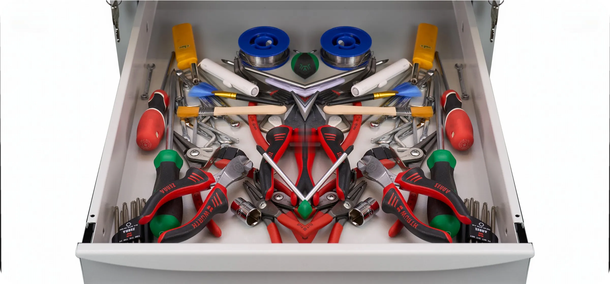
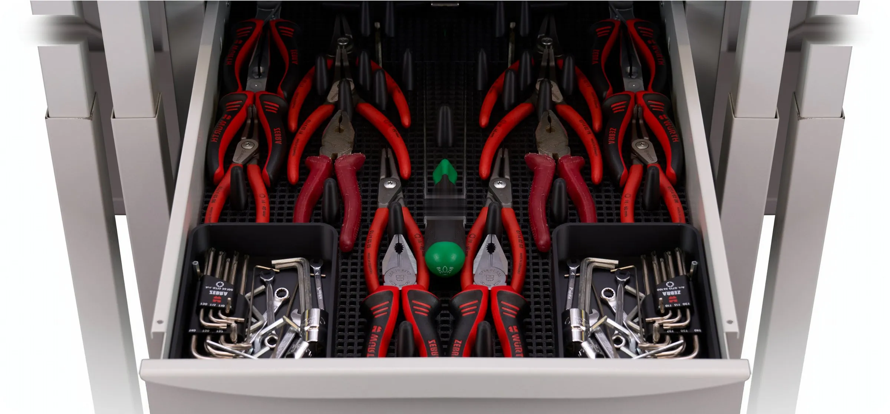
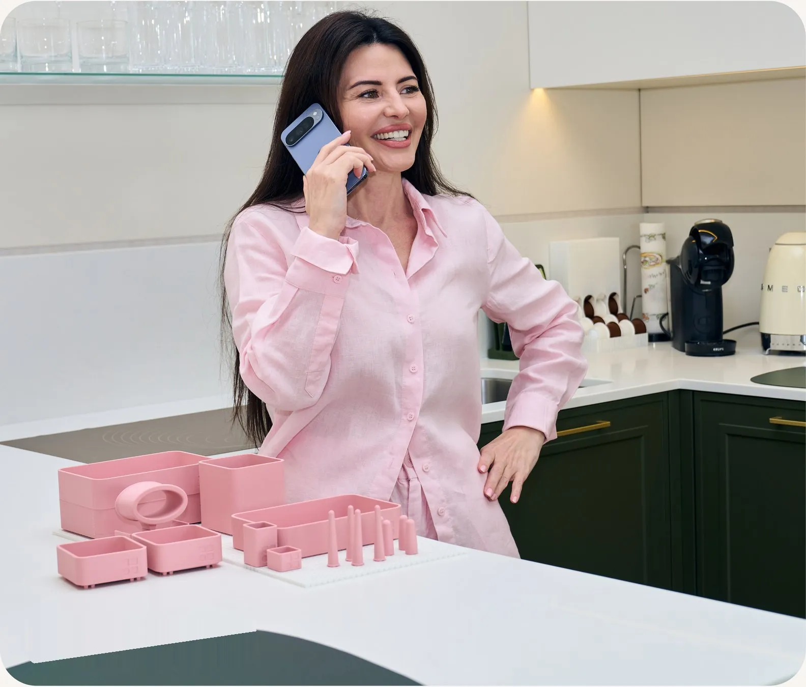
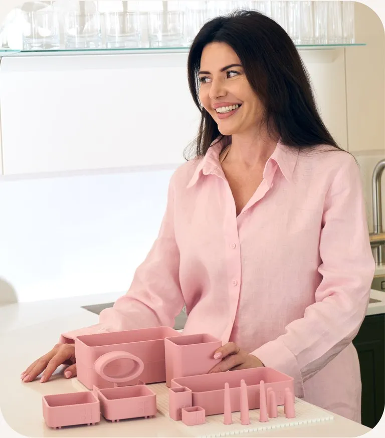

Більше,
ніж порядок
Лотки, бокси та фіксатори, що тримаються на сітці й не роз'їжджаються, коли відкриваєш шухляду. Збери свою комбінацію під власний ящик.

Модульна система яку
ти збираєш під себе
Це приклад тексту для заповнення макета. Він допомагає оцінити вигляд шрифту, довжину рядків, відступи та загальну композицію сторінки.
Обери свій набір
Та сама шухляда


Три кроки до порядку
Виміряй шухляду
Довжина, ширина, висота.
Звір із таблицею сумісності.
Обери конфігурацію
Готовий набір або збери свій —
покомпонентно, під свої речі.
Встанови за хвилину
Поклади основу, встав штирі,
натисни контейнер. Клацнуло.
Це приклад тексту
Це приклад тексту для заповнення макета. Він допомагає оцінити вигляд шрифту, довжину рядків, відступи та загальну композицію сторінки.


ринку України
Реальні відгуки покупців
Це приклад тексту для заповнення макета. Він допомагає оцінити вигляд шрифту, довжину рядків, відступи та загальну композицію сторінки.
-
Це приклад тексту для заповнення макета. Він допомагає оцінити вигляд шрифту, довжину рядків, відступи та загальну композицію сторінки. Це приклад тексту для заповнення макета. Він допомагає оцінити вигляд шрифту, довжину рядків, відступи та загальну композицію сторінки.
-
Це приклад тексту для заповнення макета. Він допомагає оцінити вигляд шрифту, довжину рядків, відступи та загальну композицію сторінки. Це приклад тексту для заповнення макета. Він допомагає оцінити вигляд шрифту, довжину рядків, відступи та загальну композицію сторінки.
-
Це приклад тексту для заповнення макета. Він допомагає оцінити вигляд шрифту, довжину рядків, відступи та загальну композицію сторінки. Це приклад тексту для заповнення макета. Він допомагає оцінити вигляд шрифту, довжину рядків, відступи та загальну композицію сторінки.
-
Це приклад тексту для заповнення макета. Він допомагає оцінити вигляд шрифту, довжину рядків, відступи та загальну композицію сторінки. Це приклад тексту для заповнення макета. Він допомагає оцінити вигляд шрифту, довжину рядків, відступи та загальну композицію сторінки.
Почни зі свого набору
Обери базову платформу та кілька модулів під свою шухляду
Доставка по Україні — 1–3 робочі дні.


Найчастіші запитання
Як зрозуміти, які модулі мені потрібні?
Це приклад тексту для заповнення макета. Він допомагає оцінити вигляд шрифту, довжину рядків, відступи та загальну композицію сторінки.
Чи підійде система під мою шухляду?
Це приклад тексту для заповнення макета. Він допомагає оцінити вигляд шрифту, довжину рядків, відступи та загальну композицію сторінки.
Чи можна докупити окремі модулі пізніше?
Це приклад тексту для заповнення макета. Він допомагає оцінити вигляд шрифту, довжину рядків, відступи та загальну композицію сторінки.
Скільки часу займає доставка?
Це приклад тексту для заповнення макета. Він допомагає оцінити вигляд шрифту, довжину рядків, відступи та загальну композицію сторінки.
Як доглядати за виробами?
Це приклад тексту для заповнення макета. Він допомагає оцінити вигляд шрифту, довжину рядків, відступи та загальну композицію сторінки.